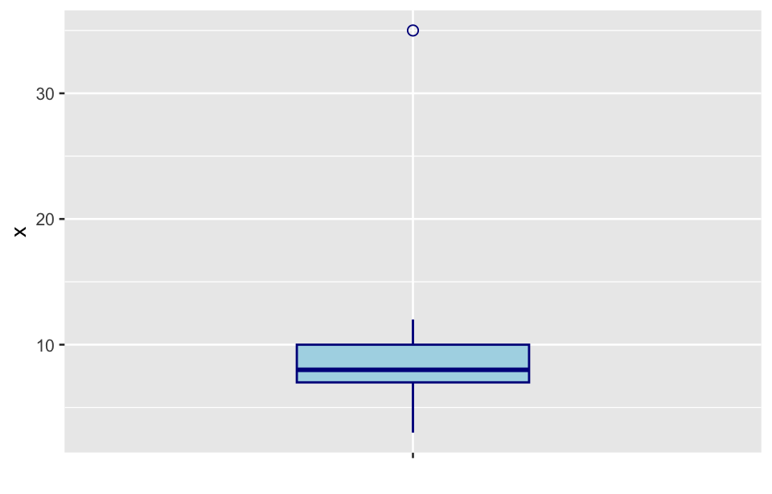
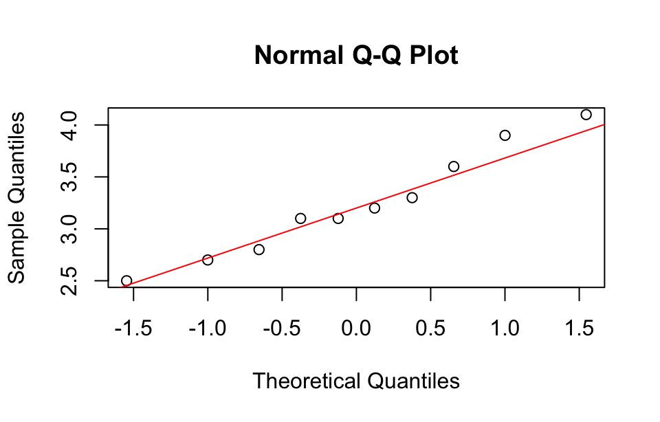

library(tidyverse)
library(outliers)
library(dataMaid)
library(validate)
library(pointblank)
library(assertr)
library(janitor)33 Data preprocessing
33.1 Prerequisites
33.2 Data validation
Data validation is a critical process in ensuring data accuracy, completeness, and consistency, especially before analysis or modeling. It improves the reliability of results and ensures data quality. Below are key aspects and methods for data validation:
33.2.1 Data integrity checks
1. Missing values
Identify missing values, assess their impact, and consider appropriate handling methods (such as imputation, deletion, or marking).
x <- c(0:4)
is.na(x) <- c(2, 4)
x
anyNA(x)
is.na(x)- 1
-
Set the positions with indices 2 and 4 in the vector x to
NA.
#> [1] 0 NA 2 NA 4
#> [1] TRUE
#> [1] FALSE TRUE FALSE TRUE FALSEdf <- data.frame(
id = 1:5,
value1 = c(10, 20, NA, 40, 50),
value2 = c(NA, 2, 3, 4, 5)
)
# Check the number of missing values in each column
missing_values <- sapply(df, \(x) sum(is.na(x)))
missing_values#> id value1 value2
#> 0 1 1# Delete rows that contain missing values
df_clean <- na.omit(df)
df_clean#> id value1 value2
#> 2 2 20 2
#> 4 4 40 4
#> 5 5 50 52. Duplicate records
Identify and remove duplicate records, especially in unique identifiers to ensure each record is unique.
x <- c(9:20, 1:5, 3:7, 0:8)
x[!duplicated(x)]
unique(x)
unique_ids <- length(unique(df$id)) == nrow(df)
unique_ids- 1
- Extract unique elements
- 2
-
Check that the
idcolumn is unique
#> [1] 9 10 11 12 13 14 15 16 17 18 19 20 1 2 3 4 5 6 7 0 8
#> [1] 9 10 11 12 13 14 15 16 17 18 19 20 1 2 3 4 5 6 7 0 8
#> [1] TRUE3. Range and logical checks
Ensure data falls within reasonable ranges. For example, age values should typically range between 0 and 120, and negative income values may indicate input errors.
x <- c(34, 55, 130, 15)
x_is_in_range <- (x >= 0) & (x <= 120)
x_is_in_range
x_ifelse <- ifelse((x >= 0) & (x <= 120), "Yes", "No")
x_ifelse
x <- c(34, 55, 130, 15)
y <- c(3, 5, 2, 5)
x_and_y <- (x >= 0 & x <= 120) & (y == 5)
x_and_y- 1
- Range check
- 2
- Logical check
#> [1] TRUE TRUE FALSE TRUE
#> [1] "Yes" "Yes" "No" "Yes"
#> [1] FALSE TRUE FALSE TRUE33.2.2 Data consistency checks
1. Type consistency
Ensure that data types are consistent for the same variable, such as “Gender” containing only values like “Male” or “Female.”
df <- data.frame(
id = 1:4,
gender = c("Male", "Female", "Female", "Make"),
birth_date = c("2003-10-01", "2003-13-25", "2011/01/01", "2000-10-04")
)
df#> id gender birth_date
#> 1 1 Male 2003-10-01
#> 2 2 Female 2003-13-25
#> 3 3 Female 2011/01/01
#> 4 4 Make 2000-10-04# Check gender format
df$gender <- factor(df$gender, levels = c("Male", "Female"))
is_valid_gender <- !is.na(df$gender)
df$valid_gender <- is_valid_gender
# Check date format
df$birth_date <- as.Date(df$birth_date, format="%Y-%m-%d")
is_valid_date <- !is.na(df$birth_date)
df$valid_date <- is_valid_date
df#> id gender birth_date valid_gender valid_date
#> 1 1 Male 2003-10-01 TRUE TRUE
#> 2 2 Female <NA> TRUE FALSE
#> 3 3 Female <NA> TRUE FALSE
#> 4 4 <NA> 2000-10-04 FALSE TRUE# Check date type
df |> str()#> 'data.frame': 4 obs. of 5 variables:
#> $ id : int 1 2 3 4
#> $ gender : Factor w/ 2 levels "Male","Female": 1 2 2 NA
#> $ birth_date : Date, format: "2003-10-01" NA ...
#> $ valid_gender: logi TRUE TRUE TRUE FALSE
#> $ valid_date : logi TRUE FALSE FALSE TRUE2. Unit consistency
Ensure that data is consistent in units, especially when values might be recorded in different units (e.g., heights, weights).
df <- data.frame(
id = 1:5,
weight_kg = c(70, 75, 80, 65, 72),
height_cm = c(170, 175, 1.8, 165, 1.72)
)You can write functions to automatically check unit consistency. For example, check if height is all in centimeters.
check_height_units <- function(df, x, unit) {
if (!(x %in% names(df))) {
stop(paste("Column", x, "does not exist in the dataframe"))
}
if (unit == "cm") {
out_of_range <- which(!(df[[x]] > 100 & df[[x]] < 220))
if (length(out_of_range) == 0) {
return(TRUE)
} else {
message(
"The following rows have heights outside the range: ",
paste(out_of_range, collapse = ", ")
)
return(FALSE)
}
} else {
stop("Unsupported unit")
}
}
# Run the check
is_cm <- check_height_units(df, "height_cm", "cm")#> The following rows have heights outside the range: 3, 5is_cm#> [1] FALSEThis function will display a message listing the rows with values outside the expected range, making it easier to locate and address discrepancies.
33.2.3 Outlier checks
1. Statistical methods
- IQR method
Outliers are typically defined as values that lie outside 1.5 times the interquartile range (IQR) from the first and third quartiles. This method is straightforward for numeric data.
find_outliers_iqr <- function(x) {
Q1 <- quantile(x, 0.25, na.rm = T)
Q3 <- quantile(x, 0.75, na.rm = T)
IQR_value <- IQR(x, na.rm = T)
lower_bound <- Q1 - 1.5 * IQR_value
upper_bound <- Q3 + 1.5 * IQR_value
outliers <- x[x < lower_bound | x > upper_bound]
return(outliers)
}
# Apply to a variable
x <- c(7, 8, 3, 12, 5, 8, 9, 35, 10)
find_outliers_iqr(x)#> [1] 35- Z-score method
Outliers can also be detected by calculating Z-scores, which measure how many standard deviations an observation is from the mean. Here the threshold for outliers is a Z-score above 2.5 or below -2.5.
find_outliers_z <- function(x, threshold = 2.5) {
z_scores <- (x - mean(x, na.rm = T)) / sd(x, na.rm = T)
outliers <- tibble(
index = which(z_scores > threshold, arr.ind = T),
value = x[abs(z_scores) > threshold]
)
return(outliers)
}
x <- c(7, 8, 3, 12, 5, 8, 9, 35, 10)
find_outliers_z(x)#> # A tibble: 1 × 2
#> index value
#> <int> <dbl>
#> 1 8 35Alternatively, you can directly use the functions from the outliers packages to detect outliers:
grubbs.test(x)#>
#> Grubbs test for one outlier
#>
#> data: x
#> G = 2.561163, U = 0.077562, p-value = 0.0001756
#> alternative hypothesis: highest value 35 is an outlierdixon.test(x)#>
#> Dixon test for outliers
#>
#> data: x
#> Q = 0.76667, p-value < 2.2e-16
#> alternative hypothesis: highest value 35 is an outlierchisq.out.test(x)#>
#> chi-squared test for outlier
#>
#> data: x
#> X-squared = 6.5596, p-value = 0.01043
#> alternative hypothesis: highest value 35 is an outlier2. Visual inspection
This method uses box plots to identify data points that deviate significantly.
df <- tibble(
id = 1:9,
x = c(7, 8, 3, 12, 5, 8, 9, 35, 10),
grp = rep("1", 9)
)
df |>
ggplot(aes(x = grp, y = x)) +
geom_boxplot(
fill = "lightblue", color = "darkblue", width = 0.4,
outlier.shape = 1, outlier.size = 2) +
labs(x = " ") +
theme(axis.text.x = element_blank())
33.2.4 Distribution checks
Distribution checks are essential for understanding the nature of a dataset and ensuring the assumptions required for certain analyses are met. You can use histograms and density plots to inspect data distributions and ensure they match expectations. If the distribution does not align with expectations (e.g., normal distribution), further investigation may be required. Here is an example of normality check:
Distribution checks are essential for understanding the nature of a dataset and ensuring the assumptions required for certain analyses are met. If the distribution does not align with expectations (e.g., normal distribution), further investigation may be required. In R, various methods can be used to perform distribution checks, depending on the characteristics you want to examine. Here are some common types of distribution checks and how to conduct them:
1. Normality check
This is used to check if data follows a normal distribution, this assumption is key for parametric tests like t-tests and ANOVA.
x <- c(2.5, 3.6, 2.8, 3.1, 3.9, 3.3, 3.1, 2.7, 3.2, 4.1)
# Visual Check
qqnorm(x)
qqline(x, col = "red")
# Statistical Test
shapiro.test(x) # Shapiro-Wilk test#>
#> Shapiro-Wilk normality test
#>
#> data: x
#> W = 0.96112, p-value = 0.7986
2. Homogeneity of variance check
Homogeneity of variance, also known as homoscedasticity, means that different groups in the dataset have similar variance. This is important for ANOVA and regression. If the assumption of homogeneity of variance is violated, it can impact the results of statistical tests by increasing the risk of type I or type II errors. Therefore, confirming that variances are equal across groups ensures that test statistics are reliable.
# A sample data frame
set.seed(123)
df <- data.frame(
group = factor(rep(1:3, each = 10)),
x = c(
rnorm(10, mean = 10, sd = 2),
rnorm(10, mean = 12, sd = 2),
rnorm(10, mean = 14, sd = 2))
)Levene’s test: Levene’s test is commonly used to assess homogeneity of variance across groups. It tests the null hypothesis that the variances of groups are equal.
rstatix::levene_test(df, x ~ group)#> # A tibble: 1 × 4
#> df1 df2 statistic p
#> <int> <int> <dbl> <dbl>
#> 1 2 27 0.000498 1.00Bartlett’s test: Bartlett’s test is another test for homogeneity of variances. It’s more sensitive to deviations from normality, so it’s typically used when data are normally distributed.
bartlett.test(x ~ group, data = df)#>
#> Bartlett test of homogeneity of variances
#>
#> data: x by group
#> Bartlett's K-squared = 0.11427, df = 2, p-value = 0.9445Fligner-Killeen test: The Fligner-Killeen test is a non-parametric test for homogeneity of variances, making it more robust to non-normal distributions.
fligner.test(x ~ group, data = df)#>
#> Fligner-Killeen test of homogeneity of variances
#>
#> data: x by group
#> Fligner-Killeen:med chi-squared = 0.03923, df = 2, p-value = 0.9806After completing data validation, compile a report detailing the checks performed, any anomalies found, and corrective actions taken. This helps ensure data quality and provides a resource for the entire analysis team.
33.2.5 Some R packages for data validation
R has several packages designed specifically for data validation and verification, which can streamline the process of checking data quality. Here are some commonly used packages and their functions for data validation.
1. dataMaid
The dataMaid package provides a complete set of data validation tools that can generate detailed reports to help you quickly understand data quality and issues. It’s especially helpful for exploring new datasets. With a single function makeDataReport(), you can check for issues like missing values, variable distributions, and extreme values, and then generate a descriptive report.
df <- tibble(
id = 1:5,
gender = c("Male", "Female", "Female", "Male", "Male"),
x1 = c(10, 20, NA, 40, 50),
x2 = c(2.3, 2.6, 3.2, 3.4, 20),
date = as.Date(c("2023-10-01", "2023-10-02", "2023.10.03", "2023-10-04", "2023-10-05"))
)
makeDataReport(
df, output = "pdf", file = "data-check.Rmd", replace = T,
render = F, onlyProblematic = T)#> The default of 'doScale' is FALSE now for stability;
#> set options(mc_doScale_quiet=TRUE) to suppress this (once per session) message2. Validate
The validate package provides powerful data validation capabilities that allow you to define and execute complex data validation rules. You can define validation rules to check for missing values, range constraints, consistency between variables, and more. The validator() function defines validation rules, confront() function apply validation rules to a dataset and generate a report.
df <- tibble(
age = c(55, 67, 62, NA, 59, 70),
income = c(30, 18, 23, 30, 20, 15),
retired = c("Yes", "Yes", "Yes", "No", "No", "Yes")
)
rules <- validator(
age >= 0,
age <= 120,
income >= 0,
if (retired == "Yes") age >= 60
)
confront(df, rules) |> summary()#> name items passes fails nNA error warning
#> 1 V1 6 5 0 1 FALSE FALSE
#> 2 V2 6 5 0 1 FALSE FALSE
#> 3 V3 6 6 0 0 FALSE FALSE
#> 4 V4 6 5 1 0 FALSE FALSE
#> expression
#> 1 age - 0 >= -1e-08
#> 2 age - 120 <= 1e-08
#> 3 income - 0 >= -1e-08
#> 4 retired != "Yes" | (age - 60 >= -1e-08)3. pointblank
The pointblank package provides a range of functions and methods to help you easily verify, validate, and report data, especially useful for data quality checks in ETL pipelines. Validation pipelines can be made using easily-readable, consecutive validation steps.
df <- tibble(
age = c(55, 67, 62, NA, 59, 70),
income = c(30, 18, -23, 30, 20, 15),
retired = c("Yes", "Yes", "Yes", "No", "No", "Yes")
)
create_agent(df) |>
col_vals_between(age, left = 0, right = 120, na_pass = T) |>
col_vals_between(income, left = 0, right = Inf, na_pass = T) |>
col_vals_not_null(age) |>
col_vals_in_set(retired, set = c("Yes", "No")) |>
interrogate()4. assertr
The assertr package is a useful tool for validating and verifying data to ensure that it meets specific conditions, making it particularly useful for data cleaning, quality checks, and pipeline automation. It allows you to perform checks on data frames, such as confirming value ranges, detecting missing or unexpected values, and enforcing data integrity.
df <- tibble(
age = c(55, 67, 162, NA, 59, 70),
income = c(30, 18, -23, 30, 20, 15),
retired = c("Yes", "Yes", "Yes", "No", "No", "Yes")
)
df |> assert(not_na, age, error_fun = error_return)#> [[1]]
#> Column 'age' violates assertion 'not_na' 1 time
#> verb redux_fn predicate column index value
#> 1 assert NA not_na age 4 NAdf |> assert(function(x) x > 0, income, error_fun = error_return)#> [[1]]
#> Column 'income' violates assertion 'function(x) x > 0' 1 time
#> verb redux_fn predicate column index value
#> 1 assert NA function(x) x > 0 income 3 -23df |> assert(within_bounds(0, 120), age, error_fun = error_return)#> [[1]]
#> Column 'age' violates assertion 'within_bounds(0, 120)' 1 time
#> verb redux_fn predicate column index value
#> 1 assert NA within_bounds(0, 120) age 3 1625. janitor
The janitor package is primarily for data cleaning, but it includes some useful functions for initial data checks, especially for dealing with missing and duplicate values.
df <- tibble(
id = c(1:3, 3:5),
age = c(55, 67, 62, NA, 59, 70),
income = c(30, 18, -23, 30, 20, 15),
retired = c("Yes", "Yes", "Yes", "No", "No", "Yes")
)
# Finds duplicate rows
get_dupes(df, id) #> # A tibble: 2 × 5
#> id dupe_count age income retired
#> <int> <int> <dbl> <dbl> <chr>
#> 1 3 2 62 -23 Yes
#> 2 3 2 NA 30 No# Cleans names of an data.frame and results names are unique
clean_names(df) #> # A tibble: 6 × 4
#> id age income retired
#> <int> <dbl> <dbl> <chr>
#> 1 1 55 30 Yes
#> 2 2 67 18 Yes
#> 3 3 62 -23 Yes
#> 4 3 NA 30 No
#> 5 4 59 20 No
#> 6 5 70 15 Yeslibrary(huxtable)#>
#> Attaching package: 'huxtable'#> The following objects are masked from 'package:validate':
#>
#> label, label<-, number_format#> The following object is masked from 'package:dplyr':
#>
#> add_rownames#> The following object is masked from 'package:ggplot2':
#>
#> theme_greydata <- head(iris)
ht <- huxtable(data)
ht <- set_caption(ht, "Iris Data")
ht <- set_all_borders(ht, 1)
ht <- set_background_color(ht, 1, everywhere, "grey95")
ht| Sepal.Length | Sepal.Width | Petal.Length | Petal.Width | Species |
|---|---|---|---|---|
| 5.1 | 3.5 | 1.4 | 0.2 | setosa |
| 4.9 | 3 | 1.4 | 0.2 | setosa |
| 4.7 | 3.2 | 1.3 | 0.2 | setosa |
| 4.6 | 3.1 | 1.5 | 0.2 | setosa |
| 5 | 3.6 | 1.4 | 0.2 | setosa |
| 5.4 | 3.9 | 1.7 | 0.4 | setosa |